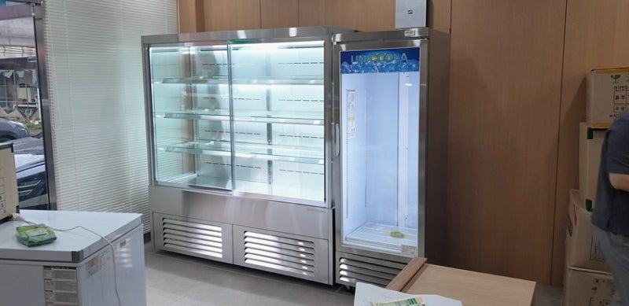
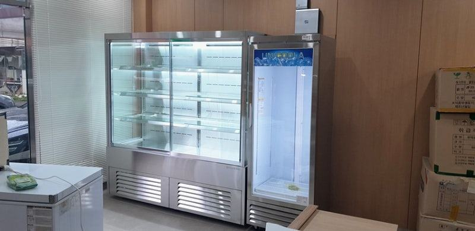
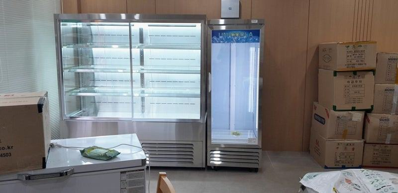
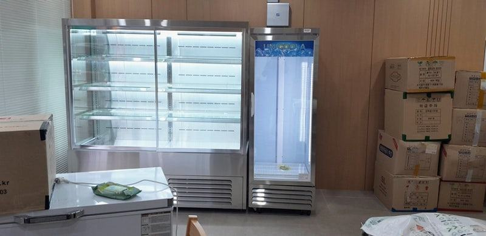
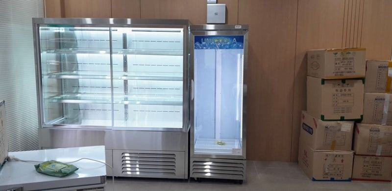
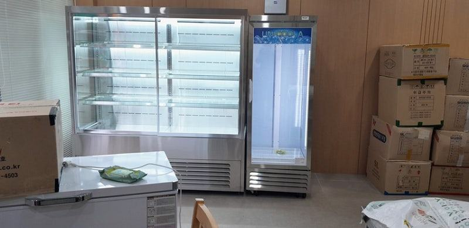
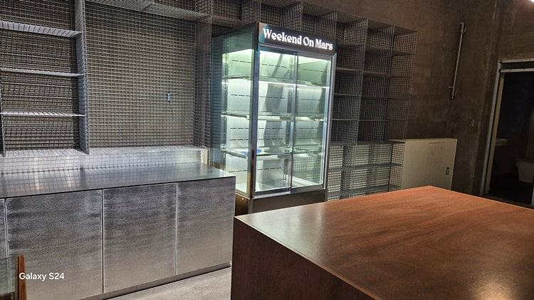
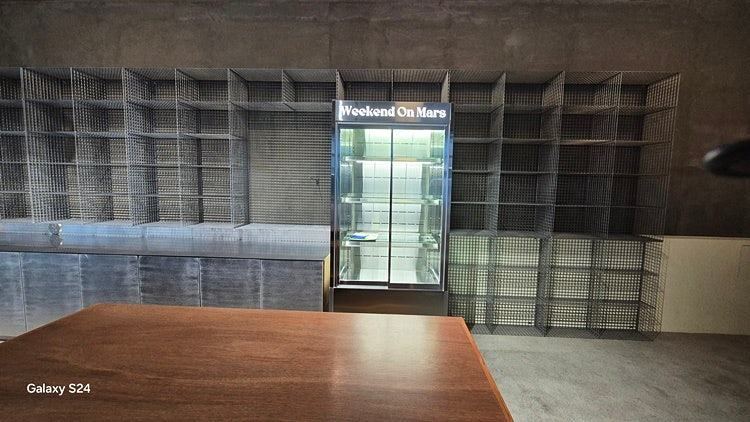
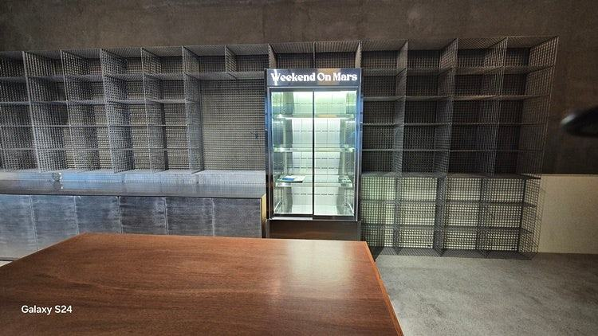
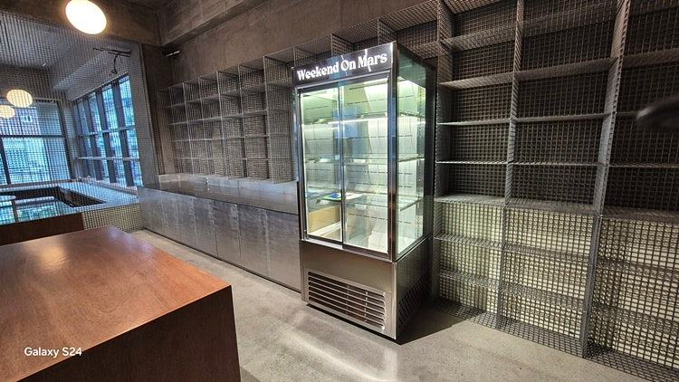

제과쇼케이스
카페쇼케이스 고르는법, 냉기 흐름·문·조명 순서로

카페쇼케이스는 디자인보다 먼저 냉기가 디저트 표면을 마르게 하지 않는지, 직원이 꺼내는 구조인지 손님이 집는 구조인지, 조명과 유리가 디저트를 선명하게 보여 주는지를 봐야 합니다. 이 세 가지를 주력 메뉴와 매장 운영 방식에 맞춰 정하면 크게 후회할 일이 없습니다.
안녕하세요. 카페와 디저트 매장의 냉장 진열장을 설계하고 제작하는 한성쇼케이스입니다.
요즘 1인 카페를 여시는 사장님들은 인테리어 감성에 공을 많이 들이십니다. 그러다 보니 카페쇼케이스도 색감과 모양부터 고르시는 경우가 많죠.
그런데 몇 달 쓰다 보면 "케이크 겉이 말라요", "유리에 김이 서려요" 같은 고민이 생기기 시작합니다.
카페쇼케이스는 보관만 하는 냉장고가 아니라 손님이 디저트를 보고 주문하게 만드는 장비입니다. 보기 좋으면서도 디저트 상태를 지켜야 하니 고를 때 봐야 할 순서가 있습니다.
오늘은 카페쇼케이스를 고르는 법을 냉기 흐름, 문 방향, 조명과 유리, 운영 방식 순서로 정리해 드리겠습니다.
1. 냉기 흐름: 디저트가 마르지 않는지
생크림 케이크나 무스는 찬 바람이 직접 닿으면 표면이 마르고 갈라집니다. 냉기가 한쪽에만 몰리면 위 칸과 아래 칸의 온도 차도 커지죠.
그래서 카페쇼케이스는 냉기가 진열 칸 전체에 고르게 퍼지는지, 디저트에 직접 바람이 꽂히지 않는지를 먼저 보셔야 합니다.
조명에서 나오는 열이 내부 습도에 영향을 주지 않는지도 확인하세요. 조명 열 때문에 윗단만 습도가 떨어지면 같은 케이크라도 윗단에 둔 것만 빨리 지칩니다.
- 상·하단 온도 차를 어떻게 줄였는지 물어보세요.
- 디저트에 바람이 직접 닿는 구조인지 확인하세요.
2. 문 방향: 누가 꺼내는지
조각 케이크나 타르트처럼 직원이 집게로 꺼내 포장하는 카페는 뒷문형이 맞습니다. 손님 쪽 유리는 닫혀 있어 위생적이고 냉기 손실도 적습니다.
반대로 샌드위치나 병 음료를 손님이 직접 집어 가는 테이크아웃 매장은 앞문형이나 오픈형이 회전이 빠릅니다.
둘 다 팔고 싶은데 공간이 좁다면 위는 밀폐된 디저트 칸, 아래는 손님이 집는 오픈 칸으로 나눈 콤비형도 방법입니다.


3. 조명과 유리: 선명하게 보이는지
디저트는 눈으로 먼저 먹는 음식입니다. 주백색 조명은 생크림의 하얀 질감을 깔끔하게, 전구색 조명은 구움과자나 초콜릿을 따뜻하게 보여 줍니다.
주력 메뉴에 맞춰 조명 색을 고르고, 단마다 조명이 들어가 아래 칸에 그늘이 지지 않는지도 확인하세요.
유리는 투명도와 결로 방지가 핵심입니다. 습한 여름이나 손님이 많아 실내 온도가 오르는 시간에 김이 서리면 디저트가 보이지 않습니다.
히팅 유리나 결로 방지 처리가 들어가는지, 유리 이음새가 깔끔하게 접합됐는지 보세요.
- 주력 디저트 색에 맞는 조명 색을 고르세요.
- 결로 방지 유리 포함 여부를 확인하세요.
4. 운영 방식과 매장 크기
하루 판매량이 많고 진열을 자주 채우는 카페라면 냉기 순환이 넉넉한 구조가 필요하고, 메뉴 수가 적은 매장은 단 수를 줄이고 층고를 높여 시그니처 디저트를 돋보이게 하는 편이 낫습니다.
좁은 매장이라면 유리 비율을 높여 답답해 보이지 않게 하는 것도 방법입니다.
마지막으로 소음도 확인하세요. 조용한 카페에서는 기계 소리가 생각보다 크게 들립니다.
체크리스트
- 냉기 분산과 상·하단 온도 차
- 조명 열이 습도에 주는 영향
- 뒷문형·앞문형·콤비형 중 문 구조
- 주력 디저트에 맞는 조명 색과 단별 조명
- 결로 방지 유리와 기계 소음
현장에서 자주 보는 경우: 아침엔 괜찮던 진열 음식이 점심에 지칠 때
진열 음식을 다루는 매장에서 자주 듣는 고민이 있습니다. 아침까지 상태가 좋던 음식이 점심쯤 되면 윤기가 사라지고 색이 탁해진다는 것입니다.
반찬 매장 사례에서 원인을 따라가 보면 대부분 냉풍이 특정 위치에만 몰리거나 상·하단 온도 차가 크고, 조명 열이 내부 습도에 영향을 주는 보관 구조에 있었습니다.
그래서 진열장을 고를 때는 냉기 분산, 온도 균형, 습도 유지, 진동과 열 전달이 적은 모터 방식부터 확인하시라고 권해 드립니다.
그 위에 음식 색을 자연스럽게 보여 주는 조명, 위생적인 외관, 보충이 편한 문 구조를 매장 운영 방식에 맞춰 고르면 카페 디저트 진열장에도 같은 기준이 그대로 적용됩니다.










자주 묻는 질문
카페쇼케이스는 뒷문형과 앞문형 중 무엇이 좋나요?
직원이 꺼내 포장하는 조각 케이크 위주라면 뒷문형, 손님이 직접 집는 샌드위치·음료 위주라면 앞문형이나 오픈형이 맞습니다.
둘 다 판다면 콤비형도 검토해 보세요.
케이크 표면이 자꾸 마르는데 어떻게 하나요?
찬 바람이 디저트에 직접 닿거나 조명 열로 습도가 떨어졌을 수 있습니다. 진열 위치를 바꿔 보시고, 계속된다면 냉기 흐름 점검을 받아 보세요.
카페 인테리어에 맞춰 색상과 크기를 바꿀 수 있나요?
매장 치수와 인테리어 시안을 알려 주시면 크기와 프레임 색상, 조명까지 맞춰 제작합니다. 설치 후 A/S는 전국 240여 개 센터를 통해 받으실 수 있습니다.
매장 조건에 맞춰 만드는 한성쇼케이스
원하시는 제품 사진과 설치할 공간 사진만 보내 주셔도 매장에 맞는 구성을 추천해 드립니다.
- 전국 240여 개 A/S 전담 센터 운영
- 본사 대량 자재 매입으로 품질 대비 합리적인 가격
- 유럽제·삼성 냉각 콤프레셔 적용
- 국내 최초 쇼케이스 전문 디자이너 상주
매장 폭과 원하는 진열 구성을 알려 주세요. 실측과 견적을 안내해 드립니다.
031-986-2458